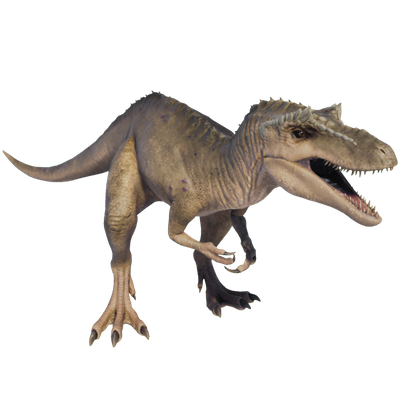

Useful Website
A relative of the fearsome apex predator Tyrannosaurus rex, Qianzhousaurus bears a resemblance to its more famous cousin, although it is significantly smaller (growing up to around eight tonnes and over 10m from head to tail) and has a distinctive elongated snout. Although its jaw is less powerful than larger Tyrannosaurids, its ability to run at speed makes Qianzhousaurus an efficient predator.
